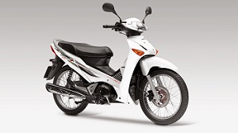
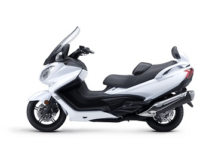
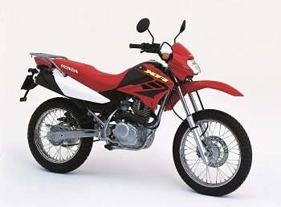
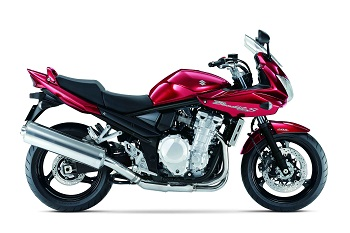
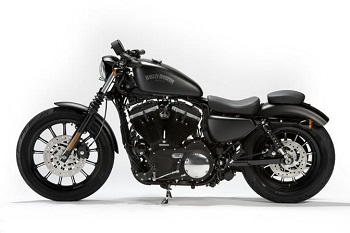
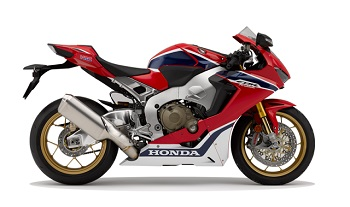
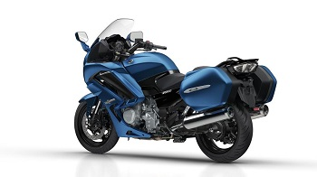
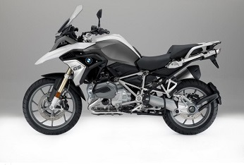

It all comes down to buying privately or via a dealer. As this site is aimed at the novice, or someone who doesn't yet own a bike, I would strongly recommend a reputable dealer.
That said, buying privately may be an option if you know (and trust) the seller and you are sure that the bike they're selling suits your requirements and license.
If you're new to all of this and would like to get a bike, it helps to know what sort or style of bike you like.
Remember also that your choices will be limited by your age and license category. If you're lucky enough to be between the ages of 16 and 18 for example, you are limited to a 125cc motorcycle.

Know this: Most popular type of bike in the world.
Advantages: Small, cheap, ultra-efficient, reliable and classless.
Disadvantages: Not many. 125cc motor best suited to urban use.

Know this: Technically a step-through, but some have larger engines.
Advantages: Popular among urban commuters, good weather protection.
Disadvantages: Heavier models can be a handful in tight traffic.

Know this: Huge seller in Asia & Africa. Go anywhere ability.
Advantages: Small, cheap, economical, incredibly reliable and robust. Popular with learners.
Disadvantages: Slow. 125cc motor best suited to urban use. Attracts thieves.

Know this: Popular with learners, excellent all-rounders.
Advantages: Inexpensive to own & run, versatile, lots of choice.
Disadvantages: Weather protection minimal.

Know this: Epitomised by Harley Davidson, but all manufacturers make them.
Advantages: Usually bought by enthusiast owners, often looked after.
Disadvantages: Can be impractical for day to day use.

Know this: Many form the basis of racing motorcycles.
Advantages: Cutting edge technology, fast, nimble & light.
Disadvantages: Expensive to buy and own, can be impractical for daily use.

Know this: The best bike for touring on is the one you own.
Advantages: Incredibly competent and well rounded. Quick and comfortable.
Disadvantages: Expensive, large, can be heavy, not for the inexperienced.

Know this: Hugely popular and versatile, a top selling category.
Advantages: Does everything and does it well. See above.
Disadvantages: Tall, can be awkward for those of shorter stature.
If buying privately you need to know the bike and the market. This is fine if you're experienced, but if not you need a knowledgeable friend or else stick to the reputable dealerships. It's in the dealers interest to build a long term business relationship with you.
Do your homework - Read as much as you can about the bike you're interested in. Owner's forums, online magazines, clubs, etc. can all be very useful sources of information. Know the different model options for your target bike.
Never inspect a prospective purchase in rain or artificial light. You need to see the machine in daylight.